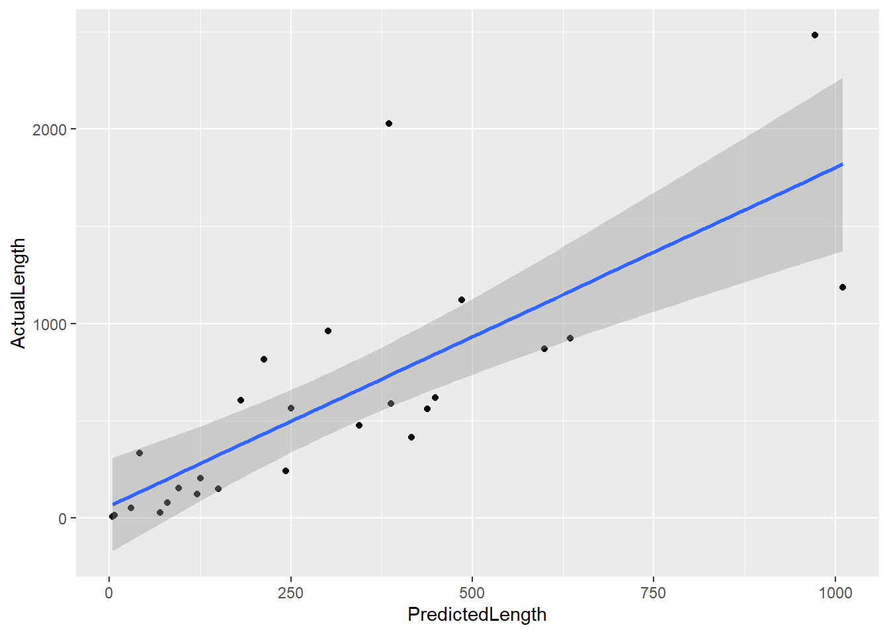

The Elon Musk Forecast Correction Function
Introduction
In case you haven’t heard, Elon Musk is the World’s Raddest Man.
He’s also something of a master of over-promising and late-delivering. He’s reasonably consistent about delivering, just… late. In order to have a problem like this, he must be very good at predicting what can be brought to market. His predictions may contain telling information about when we can expect him to deliver something, it’s just that the numbers are wrong. And because they’re wrong in a biased way (he consistently predicts things will be ready sooner than they are), we can figure out how to correct his predictions.
Assembling His (Falsifiable) Predictions
In science, there’s a really really important concept, called falsifiability. Basically, you can make statements like “Conservatives will win the next election”, but we need to figure out some objective criteria for which that statement is true or false. Does winning mean taking a majority of seats? Or a majority of seats in a coalition government? Or is it just the largest plurality, even if they can’t form the government? In other words, there are a lot of places we can stick a label like “won the election”, but we need to pick one of those in advance of making any predictions. Otherwise, we’re just blowing hot air.
So, we need to find predictions that Elon Musk has publicly stated that are more concrete than “Someday, humans will…” For Musk, that generally means timelines. For example, consider this tweet:

Here, he is making a concrete prediction that Tesla will unveil a pickup truck in 18 to 24 months. Note that Musk made the tweet on 2017-04-13. 18 months later is 2018-10-13, and 24 months later is 2019-04-13. So, did Tesla unveil the pickup truck within the predicted window? No. He teased, of course, but No.
So, let’s find as many Elon Musk predictions as we can… Or use some that somebody else has already done for us! Bloomberg assembled a list for their (much goofier) take on this topic.
##
## Attaching package: 'dplyr'## The following objects are masked from 'package:stats':
##
## filter, lag## The following objects are masked from 'package:base':
##
## intersect, setdiff, setequal, union##
## Attaching package: 'lubridate'## The following object is masked from 'package:base':
##
## datelibrary(DT)
if(!file.exists('../data-cache/musk.json')){
curl_download("https://www.bloomberg.com/bbg-gfx/doc-relay/1LbuTU_4Hezk524N_j7hHhDhgbYBuacuX3frK4TzyGrY/data.json", '../data-cache/musk.json')
}
preds <- read_json('../data-cache/musk.json')$response %>%
lapply(function(x) {
x[sapply(x, is.null)] <- NA
unlist(x)
}) %>%
do.call("rbind", .) %>%
data.frame(stringsAsFactors=FALSE) %>%
mutate(
AnnouncementDate = dmy(AnnouncementDate),
TargetDate = dmy(TargetDate),
DateAdjustmentMade = dmy(DateAdjustmentMade),
AdjustedDate = dmy(AdjustedDate),
Completed = dmy(Completed)
) %T>%
datatable()## Warning in rbind(c(Company = "Boring", Prediction = "Boring Machine Starts
## to Dig", : number of columns of result is not a multiple of vector length
## (arg 1)## Warning: 67 failed to parse.## Warning: 81 failed to parse.## Warning: 11 failed to parse.## Warning: 20 failed to parse.## Warning: 21 failed to parse.This gives us a jump-start, but the data is still too thin to be of much use.
##
## Attaching package: 'readr'## The following object is masked from 'package:curl':
##
## parse_dateAccordingly, I loaded up the ol’ spreadsheet and started manually filling in the blank spaces. This entailed a good deal of manual data cleaning and manipulation. The most important operation was selecting the dates to assign to predictions. For the date on which the prediction was registered, I tried to select the earliest available example of it (almost always Musk’s Twitter feed). For the date he predicted, I used the principle of charity to select the latest possible date. I ignored date ranges (e.g. “Summer 2017”) in favor of the terminal date that would indicate (2017-09-21). We might also note that some of the predictions include Adjustments–if his initial estimate was wrong, Musk may have later updated the prediction. But there’s nothing privileged these updates–they’re predictions unto themselves. Accordingly, I promoted them to sit in-line with the other predictions. You can view my rendition of the sheet here.
library(readr)
predictions <- read_csv('https://docs.google.com/spreadsheets/d/e/2PACX-1vT2680-9o56BFlxnt6pEaX63-3bAJ-YWmDCrDQ-Al6Se_NCMBcznCzQElMLSD5L2NZk_o1psoXkpBXG/pub?gid=0&single=true&output=csv')## Parsed with column specification:
## cols(
## Company = col_character(),
## Prediction = col_character(),
## AnnouncementDate = col_date(format = ""),
## TextTargetDate = col_character(),
## TargetDate = col_date(format = ""),
## `Adjustment?` = col_double(),
## Completed = col_date(format = ""),
## Source = col_character(),
## Source2 = col_character(),
## Description = col_character()
## )This gives us 96 predictions. But we can’t use all of them, unfortunately.
library(ggplot2)
ggplot(, aes(predictions$TargetDate-predictions$AnnouncementDate)) + geom_histogram()## Don't know how to automatically pick scale for object of type difftime. Defaulting to continuous.## `stat_bin()` using `bins = 30`. Pick better value with `binwidth`.## Warning: Removed 66 rows containing non-finite values (stat_bin). Here we can see that we have many predictions in the time range of zero to three years, and a few longer-term predictions.
predictions %<>%
mutate(
Length = as.numeric(TargetDate - AnnouncementDate, units="days"),
Error = as.numeric(Completed - AnnouncementDate, units="days")
)
ggplot(predictions, aes(Length, Error)) + geom_point()## Warning: Removed 91 rows containing missing values (geom_point).Notably, Metaculus has also generated a comparable tracking of Musk-forecasts, mapped to Metaculus questions regarding his predictions. And the raw data is available.
##
## Call:
## lm(formula = Error ~ Length, data = predictions)
##
## Residuals:
## Min 1Q Median 3Q Max
## -493.3 -202.2 -168.9 107.3 1312.5
##
## Coefficients:
## Estimate Std. Error t value Pr(>|t|)
## (Intercept) 121.3399 141.2517 0.859 0.4
## Length 1.5406 0.3201 4.813 8.29e-05 ***
## ---
## Signif. codes: 0 '***' 0.001 '**' 0.01 '*' 0.05 '.' 0.1 ' ' 1
##
## Residual standard error: 430.5 on 22 degrees of freedom
## (91 observations deleted due to missingness)
## Multiple R-squared: 0.5129, Adjusted R-squared: 0.4908
## F-statistic: 23.17 on 1 and 22 DF, p-value: 8.287e-05So, there you have it. If there’s a prediction coming from the Musk-verse, multiply the (upper-bound of the) amount of time by 1.54, and add 120 days.
Relevant Markets
Conclusion
It’s easy to fault Musk for consistently making poor projections like this. However, I think there’s a much more fundamental reason we should celebrate him: he makes public predictions at all.